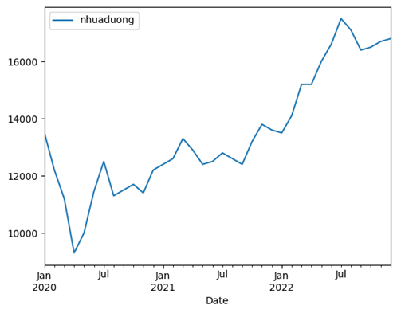
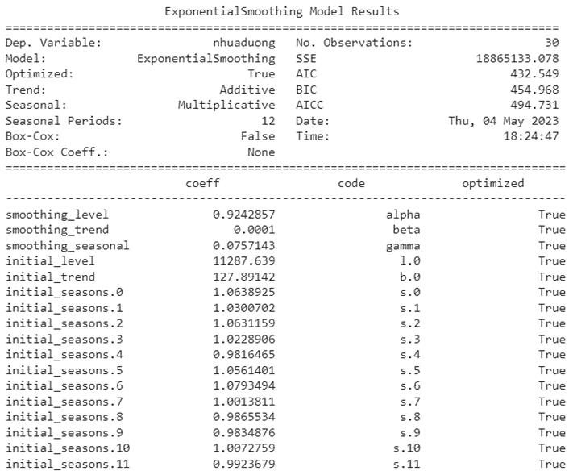
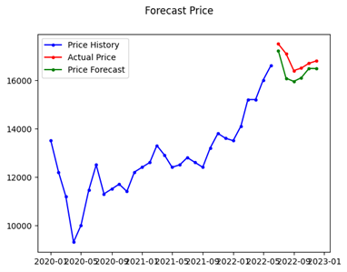
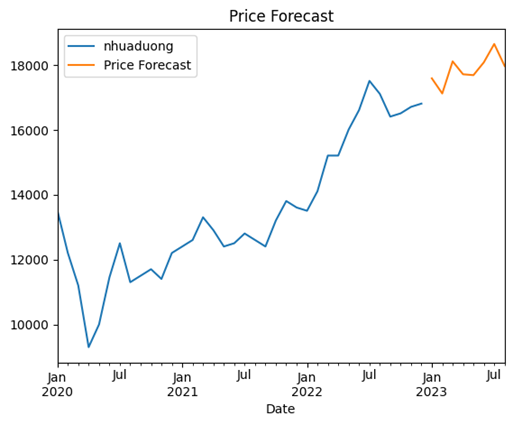

Tóm tắt
Nhựa đường đặc gồm hai loại là nhựa đường đặc Bitum có nguồn gốc từ dầu hỏa và nhựa đường đặc Hắc ín có nguồn gốc từ than đá. Tuy nhiên, nhựa đường đặc Bitum là loại phổ biến và được ứng dụng nhiều hơn trong xây dựng. Nhựa đường đặc Bitum là sản phẩm thu được từ công nghệ lọc dầu mỏ, có dạng đặc quánh, màu đen. Tùy theo điều kiện chế tạo, nhựa đường đặc được chia thành các loại mác nhựa có cấp độ kim lún khác nhau, trong đó nhựa 60/70. Ứng dụng chính của nhựa đường đặc là sản xuất bê tông nhựa đường, nhựa đường lỏng và nhũ tương nhựa đường phục vụ thi công đường bộ và các công trình giao thông. Ngoài ra nhựa đường đặc còn có thể sử dụng làm vật liệu xử lý bề mặt, chống thấm hoặc gắn kết các ván ốp trong công nghiệp xây dựng. Chính vì thế, biến động giá của nó có tác động lớn đến giá bê tông nhựa, là một trong những nguyên nhân quan trọng nhất dẫn đến sai lệch so với chi phí ước tính ban đầu trong các dự án xây dựng.
Từ khóa:
Nhựa đường, bê tông nhựa
Giới thiệu
Nhựa đường đặc gồm hai loại là nhựa đường đặc Bitum có nguồn gốc từ dầu hỏa và nhựa đường đặc Hắc ín có nguồn gốc từ than đá. Tuy nhiên, nhựa đường đặc Bitum là loại phổ biến và được ứng dụng nhiều hơn trong xây dựng. Nhựa đường đặc Bitum là sản phẩm thu được từ công nghệ lọc dầu mỏ, có dạng đặc quánh, màu đen. Tùy theo điều kiện chế tạo, nhựa đường đặc được chia thành các loại mác nhựa có cấp độ kim lún khác nhau, trong đó nhựa 60/70. Ứng dụng chính của nhựa đường đặc là sản xuất bê tông nhựa đường, nhựa đường lỏng và nhũ tương nhựa đường phục vụ thi công đường bộ và các công trình giao thông. Ngoài ra nhựa đường đặc còn có thể sử dụng làm vật liệu xử lý bề mặt, chống thấm hoặc gắn kết các ván ốp trong công nghiệp xây dựng. Chính vì thế, biến động giá của nó có tác động lớn đến giá bê tông nhựa, là một trong những nguyên nhân quan trọng nhất dẫn đến sai lệch so với chi phí ước tính ban đầu trong các dự án xây dựng.
Tài liệu
Các mô hình dự báo chi phí xây dựng có thể được phân thành hai loại: mô hình nhân quả và mô hình chuỗi thời gian (Taylor và Bowen 1987). Các mô hình ngẫu nhiên, chẳng hạn như mô hình hồi quy tuyến tính, dự báo một biến bằng cách sử dụng các biến giải thích độc lập. Các mô hình này đã được ứng dụng rộng rãi trong nghiên cứu xây dựng. Low và cộng sự (2006) đã phát triển các mô hình hồi quy tuyến tính để dự báo chi phí xây dựng tòa nhà ở Vương quốc Anh đã xem xét 41 biến giải thích tiềm năng. Mir, Mostafa và cộng sự (2021) dự báo giá vật liệu xây dựng (thép và nhựa đường) được trích xuất từ tháng 1 năm 2000 đến tháng 7 năm 2018 thông qua mô hình ANN với dữ liệu về Chỉ số giá tiêu dùng (CPI), Giấy phép xây dựng (BP), dầu thô (WITI), kết quả cho thấy rằng phân tích hồi quy và các phương pháp dự báo dựa trên ANN có giá trị hạn chế đối với việc dự báo giá nguyên vật liệu vì chúng không thể dự báo sự thay đổi của xu hướng, tuy nhiên, phương pháp dự báo khoảng thời gian dựa trên ANN được đề xuất, cung cấp một dự báo đáng tin cậy về giá nguyên liệu vì nó tính đến nhiều loại không chắc chắn khác nhau ảnh hưởng đến kết quả. Các giá trị của sai số bình phương trung bình gốc (RMSE) và sai số phần trăm tuyệt đối trung bình (MAPE) đối với các dự báo bằng ANN truyền thống đối với nhựa đường lần lượt là 20,29 và 5,97%. Điều này cho thấy rằng các ước tính điểm đơn do ANN tạo ra không đáng tin cậy do có nhiều nguồn không chắc chắn khác nhau ảnh hưởng đến kết quả. Năm 2017, Ilbeigi, M., Ashuri, B., & Joukar, A thực hiện dự báo nhựa đường trong tương lai thông qua 4 mô hình: Holt Exponential Smoothing (ES), Holt-Winters ES, Autoregressive Integrated Moving Average (ARIMA) và ARIMA theo mùa, được tạo ra để tính đến các biến động ngắn hạn. Kết quả dự báo cho thấy cả 4 mô hình chuỗi thời gian được phát triển đều có thể dự đoán chính xác giá xi măng nhựa đường với tỷ lệ lỗi nhỏ hơn 4%, với mô hình của nhà Holt và Arima theo mùa là tốt nhất. Mức độ phù hợp của Holt-Winters ES như sau: MAPE = 6,44%, MSE = 736,95 và MAE = 16,70.
Dự báo
Xây dựng và huấn luyện mô hình trên dữ liệu huấn luyện với 6 tháng cuối năm 2022.
Kết quả nhận được
 Nhìn chung, 2 đường giá nhựa đường dự báo và giá hiện tại tương đối giống nhau về xu hướng, và không có quá nhiều sự khác biệt về giá trên dự liệu mẫu. Tiến hành thực hiện giá tương lai trong 8 tháng tiếp theo tức là đến tháng 8/2023 dựa trên toàn bộ dữ liệu thu thập được
